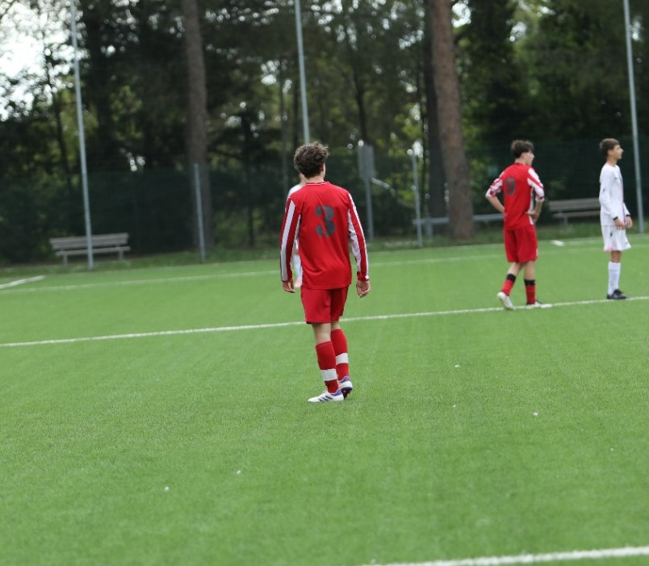

Ciao, sono Daniele Cardinali
Studente di Informatica all’ITIS “Enrico Mattei” di Recanati, appassionato di sviluppo software, reti e sport.
Il mio percorso
2022 – Ora
ITIS “Enrico Mattei” – Indirizzo Informatica
2023 – 2024
Certificazione ICDL Full Standard
2022 - 2023
Fondamenti di Programmazione
2022
Certificazione ICDL standard
Competenze Tecniche
HTML5 & CSS3
JavaScript
Python
Git & GitHub
Passioni & Hobby
Calcio
Personal training
Musica
Film
Sviluppo web